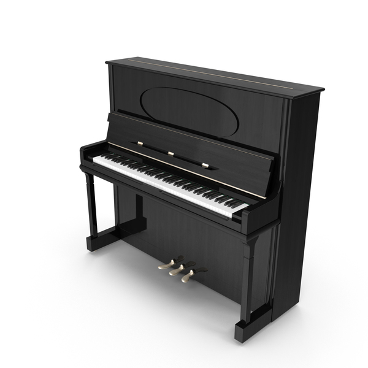
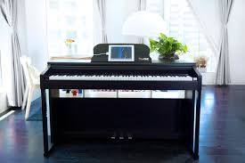
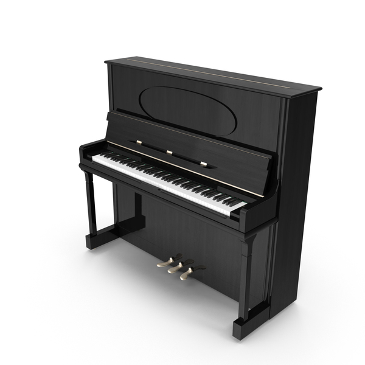
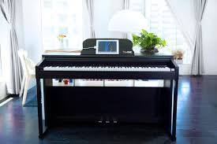
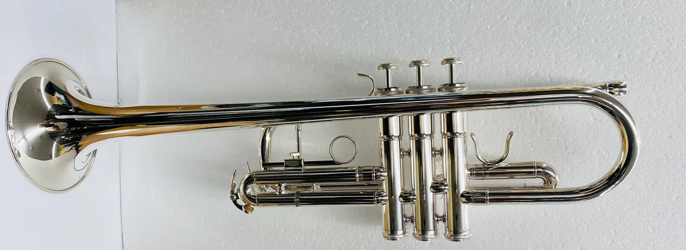
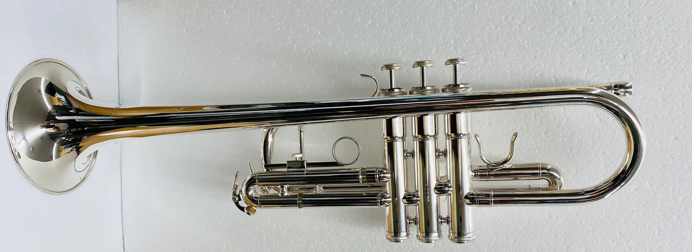
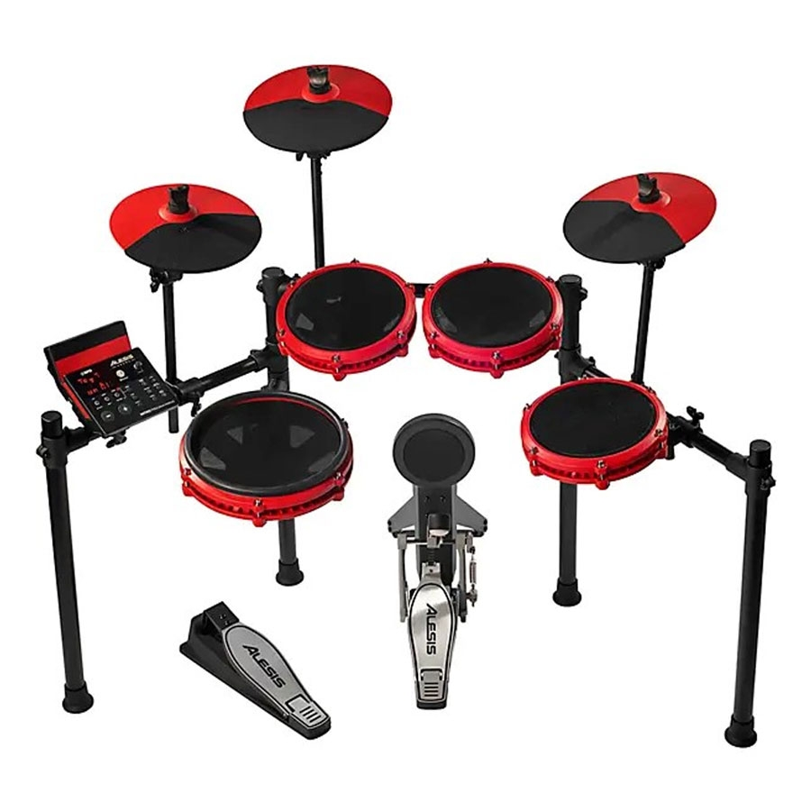
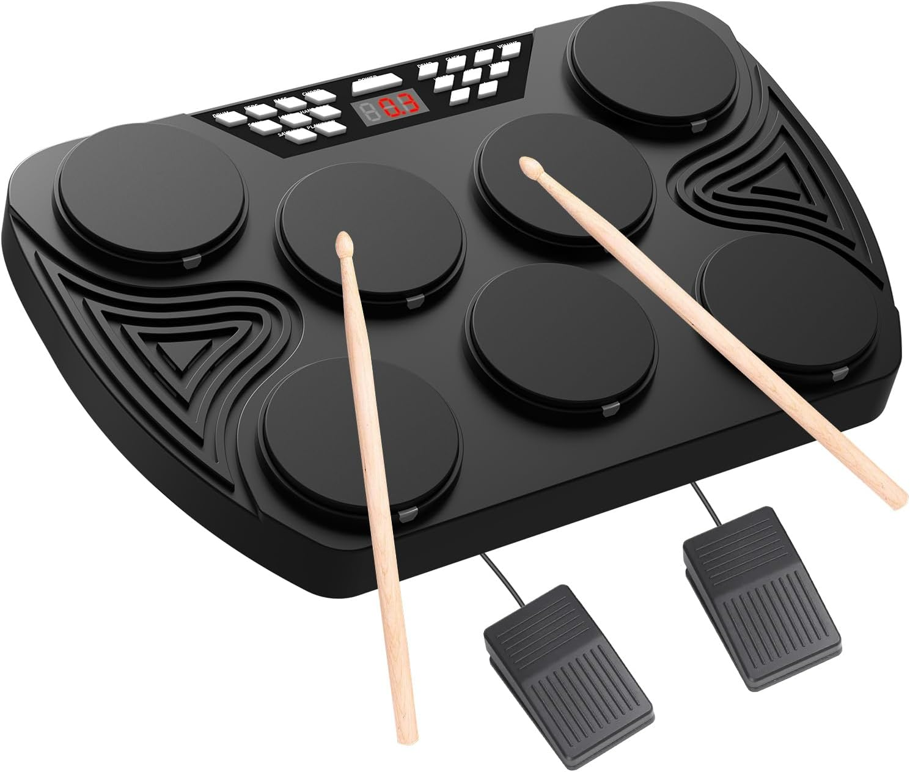
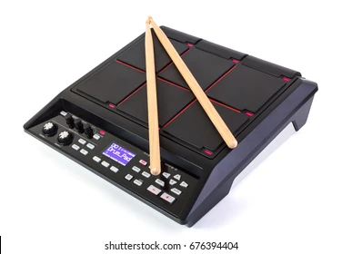

Guitar
- Default Guitar
- Acoustic Guitar
- Electric Guitar
- Classical Guitar

 



Piano
- Default Piano
- Grand Piano
- Upright Piano
- Digital Piano


Violin
- Default Violin
- Classical Violin
- Electric Violin
- Baroque Violin
 



Trumpet
- Default Trumpet
- Bb Trumpet
- C Trumpet
- Piccolo Trumpet




DRUMS
- Austioc Drum
- Mini Drum Set
- Electric Drum Pad
- Full Austioc Drum


Flute
- Default Flute
- Concert Flute
- Piccolo
- Alto Flute


Tabala
- Delhi Tabala
- Benaras Tabala
- Punjabi Tabala
- Ajrara Tabala


SITARA
- Kharaj Pancham Sitar
- Gandhar Pancham Sitar
- Bass Sitar
- Electric Sitar